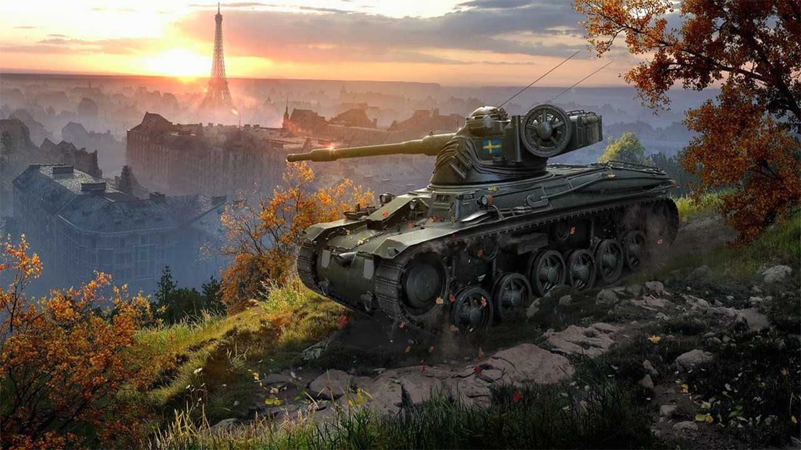
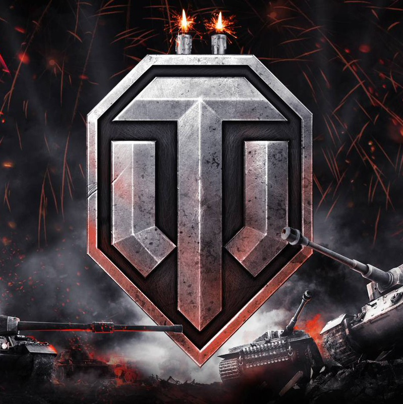

«WorldOfTanks» — это массовый многопользовательский танковый экшн, посвящённый бронированным машинам середины XX века. Игроку предстоит исследовать технику, управлять ей и, конечно же, участвовать в командных сражениях. Это невероятный игровой опыт на более чем 40 фотореалистичных уникальных картах в нескольких режимах игры.А для самых погруженных в игру людей есть отдельный вид развлечений, где они могут померяться силами, умениями и даже заработать реальные деньги — регулярные турниры и танковый киберспорт!
ОС: Windows XP/Vista/7 64-bitПроцессор: 2.5 GHzОЗУ: 4 GB Видеоадаптер: GeForce 260/ ATI HD4870 Аудио-карта: совместимая с DirectX 9.0c. Свободное место на жестком диске: 9 GB
Этот сайт сделан Рушти Таировым,для фанатов ворлд оф танкс, которые развивается в веб разработки.